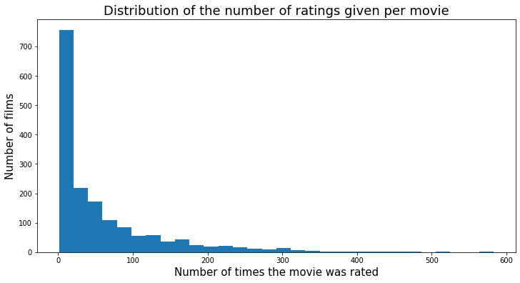
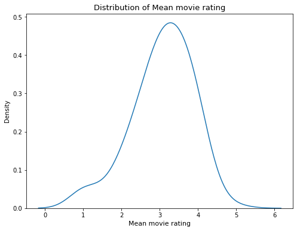
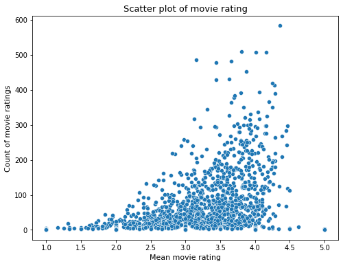
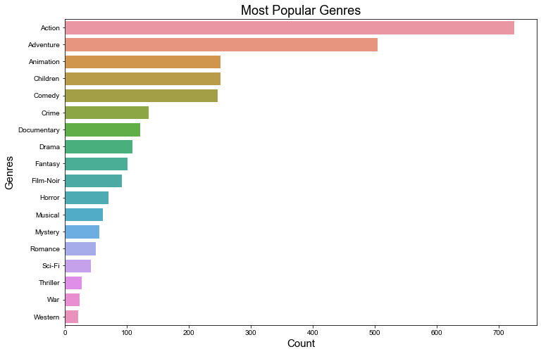

Exploratory Data Analysis
Contents
Exploratory Data Analysis#
import os
import numpy as np
import pandas as pd
import matplotlib.pyplot as plt
from sklearn.decomposition import TruncatedSVD
from sklearn.model_selection import train_test_split
import seaborn as sns
import surprise
from surprise import SVD, Dataset, Reader, accuracy
from surprise.model_selection import cross_validate
pd.set_option('display.max_columns', 500)
pd.set_option('display.width', 2000)
Dataset#
For this analysis the MovieLens 100K Dataset is utilized.
Were collected by the GroupLens Research Project which is a research group in the Department of Computer Science and Engineering at the University of Minnesota
This data set consists of:
100,000 ratings (1-5) from 943 users on 1682 movies.
Each user has rated at least 20 movies.
The data was collected during a seven-month period from September 19th, 1997 through April 22nd, 1998.
# data
cols = ["user_id", "movie_id", "rating", "timestamp"]
ratings = pd.read_csv(
os.path.join("../data", "ml-100k", "u.data"),
sep="\t",
names=cols,
encoding="latin-1",
)
ratings
ratings = ratings.drop(columns=["timestamp"])
ratings.head()
| user_id | movie_id | rating | |
|---|---|---|---|
| 0 | 196 | 242 | 3 |
| 1 | 186 | 302 | 3 |
| 2 | 22 | 377 | 1 |
| 3 | 244 | 51 | 2 |
| 4 | 166 | 346 | 1 |
# Movies data
cols = [
"movie_id",
"movie_title",
"release_date",
"video_release_date",
"IMDb_URL",
"unknown",
"Action",
"Adventure",
"Animation",
"Children",
"Comedy",
"Crime",
"Documentary",
"Drama",
"Fantasy",
"Film-Noir",
"Horror",
"Musical",
"Mystery",
"Romance",
"Sci-Fi",
"Thriller",
"War",
"Western",
]
movies_data = pd.read_csv(
os.path.join("../data", "ml-100k", "u.item"),
sep="|",
names=cols,
encoding="latin-1",
)
movies_data.head()
movie_titles = movies_data[['movie_id', 'movie_title']]
movie_titles.head(3)
| movie_id | movie_title | |
|---|---|---|
| 0 | 1 | Toy Story (1995) |
| 1 | 2 | GoldenEye (1995) |
| 2 | 3 | Four Rooms (1995) |
Exploratory Data Analysis EDA#
# Description of the data
user_key = "user_id"
item_key = "movie_id"
N = len(np.unique(ratings[user_key]))
M = len(np.unique(ratings[item_key]))
print("Number of users : %d" % N)
print("Number of movies : %d" % M)
Number of users : 943
Number of movies : 1682
print("Average number of ratings per user : %.0f" % (len(ratings) / N))
print("Average number of ratings per movie: %.0f" % (len(ratings) / M))
Average number of ratings per user : 106
Average number of ratings per movie: 59
movies_full = pd.merge(ratings, movie_titles, right_on='movie_id', left_on='movie_id')
movies_full.head()
| user_id | movie_id | rating | movie_title | |
|---|---|---|---|---|
| 0 | 196 | 242 | 3 | Kolya (1996) |
| 1 | 63 | 242 | 3 | Kolya (1996) |
| 2 | 226 | 242 | 5 | Kolya (1996) |
| 3 | 154 | 242 | 3 | Kolya (1996) |
| 4 | 306 | 242 | 5 | Kolya (1996) |
movies_agg = movies_full[['movie_title','rating']].groupby(by='movie_title').agg(['count','mean'])['rating'].reset_index()
# If at least 20 rankings
top_rankings = movies_agg[movies_agg['count'] >=20].sort_values('mean', ascending=False).iloc[:5]
top_rankings['mean'] = top_rankings['mean'].round(decimals = 2)
top_rankings
# Highest ranked movies by all users
| movie_title | count | mean | |
|---|---|---|---|
| 318 | Close Shave, A (1995) | 112 | 4.49 |
| 1281 | Schindler's List (1993) | 298 | 4.47 |
| 1652 | Wrong Trousers, The (1993) | 118 | 4.47 |
| 273 | Casablanca (1942) | 243 | 4.46 |
| 1597 | Wallace & Gromit: The Best of Aardman Animatio... | 67 | 4.45 |
movies_agg = movies_full[['movie_title','rating']].groupby(by='movie_title').agg(['count','mean'])['rating'].reset_index()
# If at least 20 rankings
# Most ranked movies
movies_agg[movies_agg['count'] >=20].sort_values('count', ascending=False).iloc[:5][['movie_title','count']]
| movie_title | count | |
|---|---|---|
| 1398 | Star Wars (1977) | 583 |
| 333 | Contact (1997) | 509 |
| 498 | Fargo (1996) | 508 |
| 1234 | Return of the Jedi (1983) | 507 |
| 860 | Liar Liar (1997) | 485 |
low_rankings = movies_agg[movies_agg['count'] >=20].sort_values('mean', ascending=True).iloc[:5]
low_rankings['mean'] = low_rankings['mean'].round(decimals = 2)
low_rankings
| movie_title | count | mean | |
|---|---|---|---|
| 849 | Lawnmower Man 2: Beyond Cyberspace (1996) | 21 | 1.71 |
| 560 | Free Willy 3: The Rescue (1997) | 27 | 1.74 |
| 854 | Leave It to Beaver (1997) | 44 | 1.84 |
| 176 | Bio-Dome (1996) | 31 | 1.90 |
| 124 | Barb Wire (1996) | 30 | 1.93 |
movies_agg[movies_agg['count'] >=20].sort_values('count', ascending=True).iloc[:5][['movie_title','count']]
| movie_title | count | |
|---|---|---|
| 955 | Maximum Risk (1996) | 20 |
| 159 | Beverly Hillbillies, The (1993) | 20 |
| 649 | Half Baked (1998) | 20 |
| 1187 | Prophecy II, The (1998) | 20 |
| 822 | Kiss of Death (1995) | 20 |
df_grp = movies_full[['movie_id','rating']].groupby(by='movie_id').agg(['count','mean'])['rating'].reset_index()
plt.figure(figsize=(12,6))
plt.hist(df_grp['count'], bins=30)
plt.title('Distribution of the number of ratings given per movie', fontsize=18)
plt.xlabel('Number of times the movie was rated', fontsize=15)
plt.ylabel('Number of films', fontsize=15)
#plt.savefig("hist_dist_count_ratings.png",dpi=400, bbox_inches='tight')
plt.show()

plt.figure(figsize=(8,6))
sns.kdeplot(data = df_grp, x = 'mean', bw_method=0.5)
plt.title('Distribution of Mean movie rating', fontsize=13)
plt.xlabel('Mean movie rating', fontsize=11)
plt.show();

plt.figure(figsize=(8,6))
sns.scatterplot(data=df_grp, x='mean', y='count')
plt.title('Scatter plot of movie rating', fontsize=13)
plt.xlabel('Mean movie rating', fontsize=11)
plt.ylabel('Count of movie ratings', fontsize=11)
plt.show();

genres = list(movies_data.columns[6:])
genre_counts = movies_data[genres].sum(axis=0)
genre_counts= pd.DataFrame(genre_counts, columns=['counts'])
genre_counts_sorted = genre_counts.sort_values(by = 'counts', ascending=False)
plt.figure(figsize=(12,8))
plt.title('Most Popular Genres', fontsize=18)
plt.ylabel('Genres', fontsize=15)
sns.set(style="darkgrid")
sns.barplot(x='counts',y =genre_counts.index, data=genre_counts_sorted)
plt.xlabel('Count', fontsize=15);
